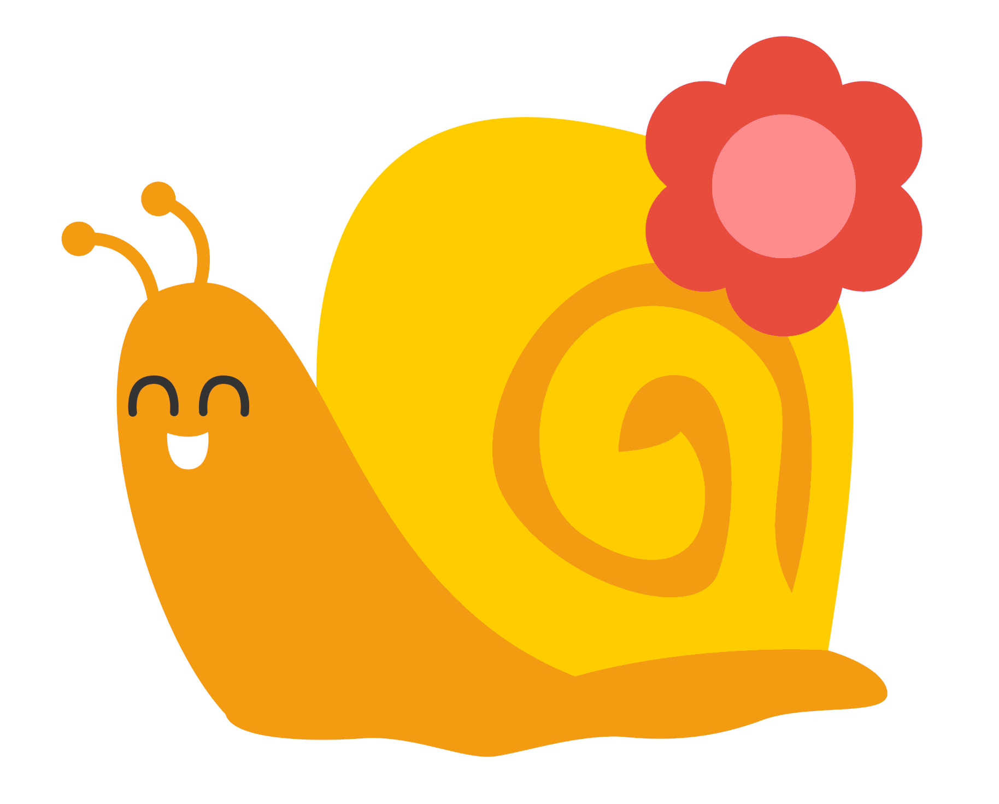
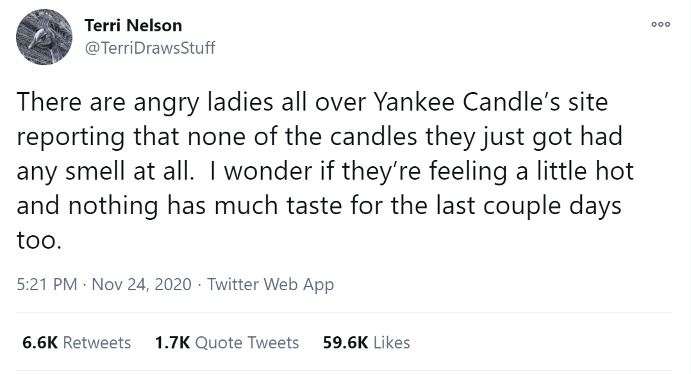
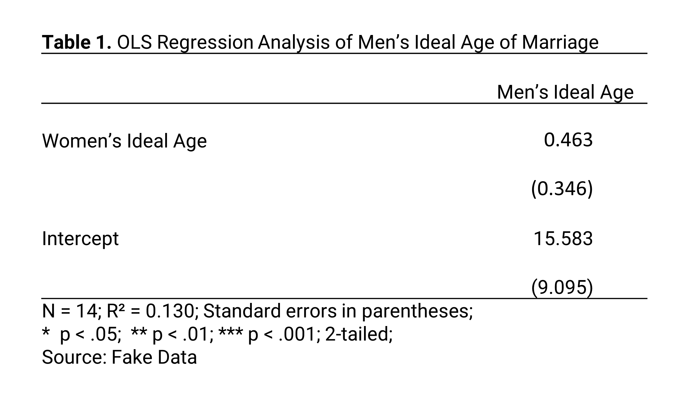
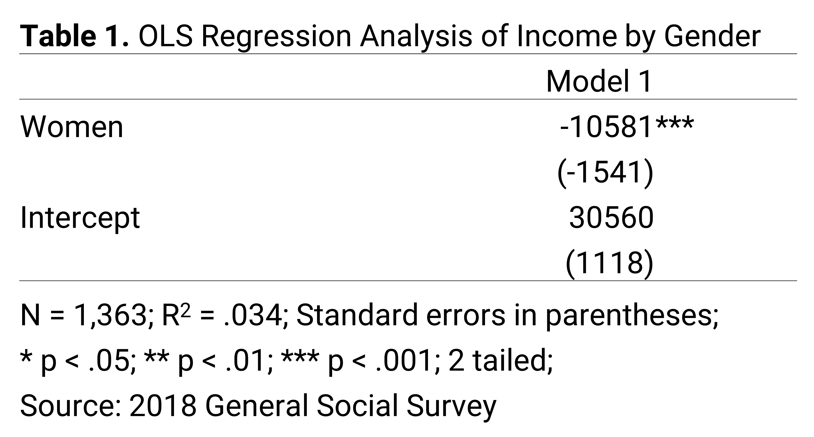
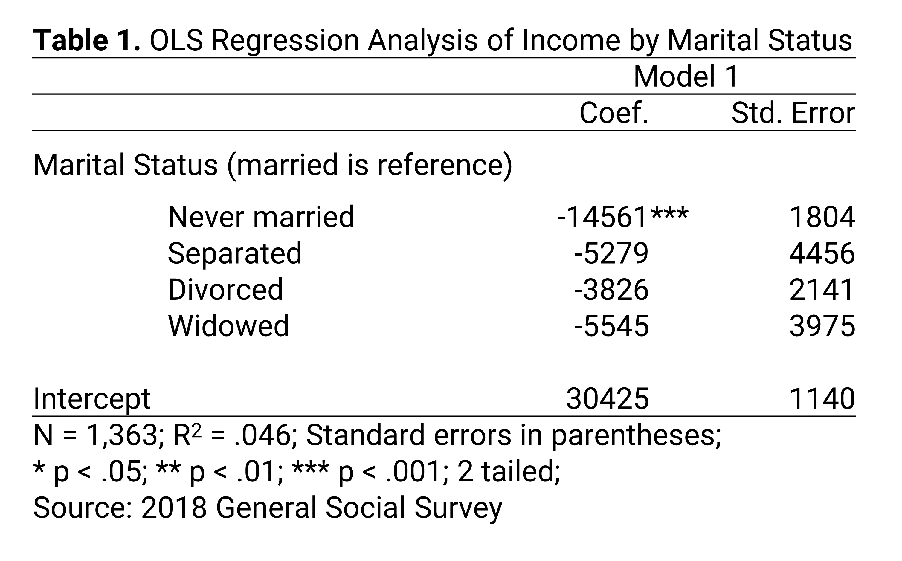
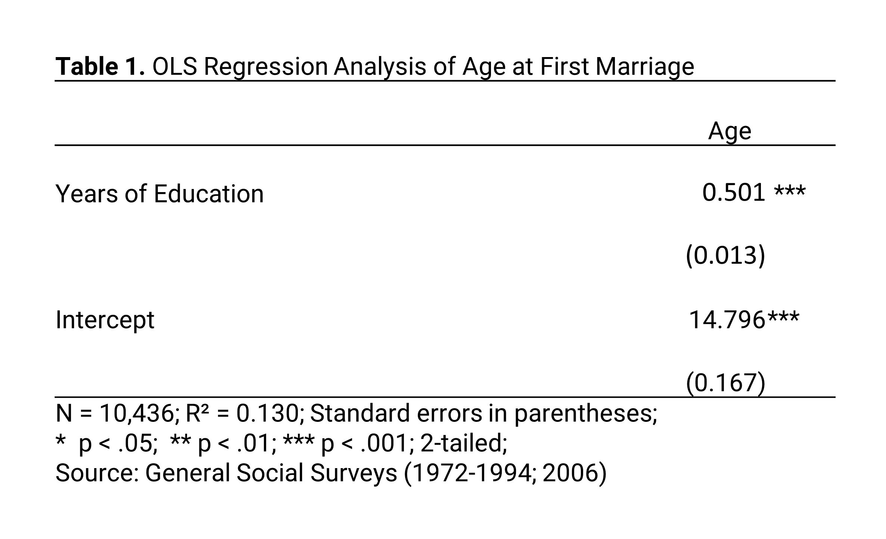
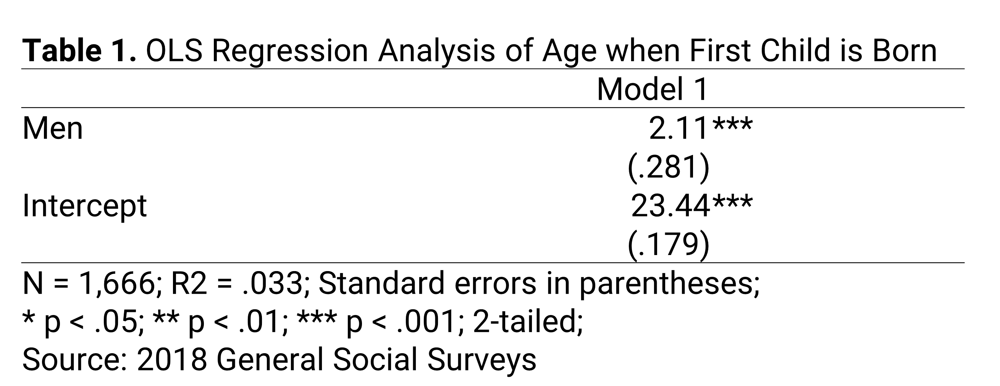

Tutorial 08
Regression

LEARNING OBJECTIVES
- Describe linear relationships for bivariate regression models.
- Interpret the intercept and coefficients.
- Interpret the goodness of fit (\(R^2\)).
READINGS
Readings are available on Quercus.
- Regression Analysis: The Miracle Elixir
TERMS
- REGRESSION EQUATION
- \(a\) (Y-INTERCEPT)
- \(b\) (SLOPE)
- OLS REGRESSION
- LEAST-SQUARES LINE
- RESIDUAL
- COEFFICIENTS
- MULTIPLE REGRESSION
- STATISTICAL SIGNIFICANCE
- \(R^2\)
Review
Terri Nelson pointed out on Twitter that there were numerous complaints that people’s Yankee candles did not have any smell. Because the loss of smell (and taste) is one of the known symptoms of COVID-19, Terri wondered if COVID-19 was leading to increasing complaints about non-smelling candles, rather than the candles actually being defective.

If this research hypothesis is true, that COVID-19 is associated with more complaints about non-smelling candles, there should be a change in the average ratings of candles after the COVID-19 pandemic began.
The null hypothesis would be that there is no change in the average ratings of candles before and after the COVID-19 pandemic started.
In order to examine the relationship, Kate Petrova created a scatterplot to find out.

The candle scatterplot shows the relationship between time (independent variable) and average ratings of 3 popular candles (dependent variable). Each dot represents a candle rating. The line shows the average candle rating for each time point. The shaded area around the line represents the standard errors for each average.
The average candle rating stayed above 4 points until the beginning of the pandemic. The average appears to drop about 1 month after the pandemic began. By November, the average appears to be less than 3.5.
With this scatterplot, we find evidence to reject the null hypothesis. In other words, the scatterplot is consistent with the research hypothesis.
Elaboration
Another way to evaluate this hypothesis is to determine whether the reviews are conditional on the candle being scented. Maybe candle reviews were declining for a reason other than a lack of smell. If the research hypothesis is true, the decline in reviews should be evident for scented candles but there should be no change in average reviews for unscented candles.
So, Kate Petrova checked this out too. She created two scatterplots, one for scented candle reviews and one for unscented candle reviews.

Notice that unlike the scented candle reviews, the review averages for unscented candles stays relatively flat across time. Thus, the decline in candle reviews since the start of the pandemic does appear to be conditional on whether the candle was scented or unscented. These findings suggest the decline is consistent with a loss of smell among candle reviewers.
We can also formally test whether the average review score of scented candles has been declining over the course of the year, as an increasing number of people contracted COVID-19.
Pearson’s Correlation Coefficient (R)
In our candle example, the R value for scented candles was -0.346, whereas the R value for unscented candles was -.134. Therefore, we could say:
There is a moderately negative relationship between reviews for scented candles and day of the year. Increases in the day of the year was correlated with decreases in average reviews for scented candles (r = -0.346, p < .001). Comparatively, the relationship between day of the year and reviews for unscented candles was weakly negative (r = -.134, p < .001).
In both cases the relationships are statistically significant. But the strength of the relationship between candle reviews and day of the year was substantially much stronger for the scented candles than for the unscented candles.
Regression Equation
Watch this short video for an introduction to regression analysis [5 minutes].

Equation
The best fitting line is represented as an equation:

Let’s walk through each part of this equation with the candle example. The following is a scatterplot of the reviews in 2020. The x-axis shows the day of the year and the y-axis shows the average rating for each day. The figure also shows the regression equation.

\(a\) (y-intercept)
The y-intercept is represented as \(a\), the value of Y when X is equal to 0. The y-intercept is the place where the regression line crosses the y-axis.
Heads Up!
\(a\) is sometimes expressed as \(b_0\).
In our example, \(a\) is equal to 4.27. What does 4.27 mean exactly?
In this example, on day zero of 2020 (meaning the last day of 2019), our model would predict the average rating of scented candles would be 4.27 (out of 5).
Often times the y-intercept in a regression equation doesn’t make much sense, because in the real world, the data wouldn’t exist. For example, if we were predicting average income by age, the intercept would denote the average income of an infant (0 years old), but this is unlikely to be meaningful, since infants don’t earn money. Still, the intercept is an important part of the equation, which you’ll soon see.
Watch this short video for another example of interpreting the y-intercept (\(a\)) of a regression model [2 minutes].


\(b\) (Slope)
The slope of the regression line, represented as \(b\), is the change in the dependent variable for each change in the independent variable. As you move along the x-axis by 1, the value of the Y variable increases or decreases by the value of \(b\).

Positive relationship: When \(b\) is positive, then when X increases, Y increases
Negative relationship: When \(b\) is negative, then when X increases, Y decreases
In our candle example, the slope \(b\) was -.00303. This means that the average rating of scented candles is expected to decrease by .00303 points per day, on average.
This is such a small number, we might want to turn the slope into a weekly change instead of a daily change by multiplying .00303 by 7. Then we could say that the average rating of scented candles is expected to decrease by .02 points (.00303 * .7) each week, on average.
Watch this short video for an explanation of how to interpret the slope of a regression line [3 minutes].

Predictions
We can use the equation for the best fitting line to predict the value of the dependent variable once we know the y-intercept (\(a\)) and the slope of the line (\(b\)). Meaning, this equation can be used to obtain a predicted value for a value of y, given any x value.
The predicted y variable is denoted as \(\hat{Y}\) (pronounced “Y hat”). In other words, \(\hat{Y}\) is the predicted value of the dependent variable, based on a given value of the independent variable.
Refer back to the candle example. The regression equation was: \(\hat{Y}\) = 4.27 -.00303\(x\). Suppose we want to know what the average rating for scented candles might be 2 months into the year, or the 60th day of the year. Our equation would look like this:
\(\hat{Y}\) = 4.27 -.00303*60
\(\hat{Y}\) = 4.27 -.1818
\(\hat{Y}\) = 4.0882
Stated more plainly, our model predicts that the average candle rating on the 60th day of the year would be 4.0882.
A word of caution
Predictions using the regression line should typically only be used within the range of the x values. Making predictions beyond the scope of the actual data, called extrapolation, can be highly misleading.

OLS & \(R^2\)
To determine exactly where to draw the regression line, we have to find the least-squares line.
Least-squares Line
The best-fitting line is the one that generates the least amount of error.
The error (vertical distance) between the actual data point (\(Y\)) and the predicted data point (\(\hat{Y}\)) is referred to as a residual.

Data points above the line will have a positive residual and data points below the line will have a negative residual. In the candle example, the line fits point A better than it fits point B, but not as well as it fits point E.
The best fitting line (regression line) is the one that minimizes the sum of the squared residuals. Squaring the residuals removes the negative signs (so the errors don’t cancel each other out when they are summed) and the larger residuals are weighted more heavily.
The statistical technique that produces the least-squares line is called Ordinary Least-squares Regression (OLS), or sometimes shortened to simply linear regression. Calculus is used to determine the formula. In this course, I’m not going to ask you to calculate the best-fitting line.
Coefficients
The slope (\(b\)) of \(X\) is sometimes called a regression coefficient, or simply a coefficient. A coefficient is just a number used to multiply a variable. In the candle example, we could say the coefficient for the variable “day” is -.00303.
So far we have examined simple linear regressions, an equation model with one independent variable used to predict another variable. But, often we want to use two or more variables to predict the value of the dependent variable. Using more than one independent variable in our equation is referred to as multiple regression.
In the candle example, we might want to predict the average rating for scented candles based on both the day of the year and the number of candle orders. Maybe we think scented candle reviews could also be declining because fewer people are buying candles in 2020. The 2020 candle consumers could be the true candle lovers, people with high candle smelling expectations, since fewer people may be buying candles because they aren’t expecting any visitors to their homes.
Then we could find the predicted average rating of scented candles (dependent variable) based on a combination of two independent variables: \(b_1\) (day) and \(b_2\) (orders).
Our equation would then look like this:
\(\hat{Y}\) = \(a\) + \(b_1\)\(X_1\) + \(b_2\)\(X_2\)
To predict the average rating for scented candles, you add the intercept (\(a\)), the day of the year multiplied by \(b_1\), and the number of candle orders multiplied by \(b_2\).
The regression coefficient for day of the year (\(b_1\)) is the slope of the relationship between the dependent variable (average rating of scented candles) and the independent variable (day of the year) that is not correlated with the number of candle orders. It represents the change in the dependent variable associated with a change in the independent variable when the other independent variable is held constant.
Statistical significance
Each coefficient in the regression equation has its own standard error, test statistic (t value), and p-value.
Researchers denote the p-values with asterisks (*), typically referred to as stars, in tables reporting the results from a regression. The table notes often include the following type of statement:
- p < .05; ** p < .01; *** p < .001
We might display the results from the regression in the candle example in a table that looks like this:

The p-value for each independent variable tests the null hypothesis, that the variable has no correlation with the dependent variable. The p-value for the “day” coefficient (-.00303) was 2.18e-08 (i.e., p < .0001). This is denoted in the table with the three *. Therefore, using an alpha level of .05, we can reject the null hypothesis that there is no association between the day of the year and change in the average ratings of scented candles in 2020.

Dichotomous Independent Variable
Regression can be used to evaluate the relationship between a dichotomous variable and an interval-ratio dependent variable. When a dichotomous variable is coded as 0/1, a one unit difference represents switching from one category to the other.
- The intercept (α) is the average among the group coded as 0.
- The intercept (α) + the slope (b1) is the average among the group coded as 1.
- The slope (b1) is the average difference between group 1 and group 2.

***Nominal/Ordinal Independent Variable
The same logic can be used for categorical variables by transforming them into a series of dichotomous variables.

The mean of the missing category in the table is the intercept (\(a\)).
The group coded 0 across all of the dummy variables becomes the “reference category.” The intercept (\(a\)) becomes the MEAN of the reference category.
The slopes for each of the other categories represent the difference in averages in relation to the reference category.

***Watch this video for a summary of OLS [12 minutes].

\(R^2\)
\(R^2\) is a measure of the proportional reduction of error, meaning that it measures the extent that knowing the value of one or more variables can help predict the value of the dependent variable. \(R^2\) quantifies how much prediction error is eliminated by using least-squares regression.
\(R^2\) ranges from 0 to 1, representing the proportion of the variance of a dependent variable that is explained by the independent variable(s) in a regression model.
When \(R^2\) is equal to 0, there is no relationship between the two variables.
Knowing the value(s) of the independent variable(s) does not help in predicting the value of the dependent variable. Our best guess of the dependent variable is the mean when the r-squared value is 0.
When \(R^2\) is equal to 1, there is a perfect relationship between the variables.
Knowing the value(s) of the independent variable(s) leads to a perfect prediction of the dependent variable.
When observations are closely grouped around the regression line, the \(R^2\) will be larger. In the social sciences, a high \(R^2\) is rare (people are complicated!).
In order to obtain the percentage of variation in the dependent variable explained by the independent variable(s), multiply \(R^2\) by 100.
In our candle example, the \(R^2\) was .092. This means that knowing the day of the year has reduced the uncertainty of our prediction of the average rating of scented candles by 9.2%. Or, by knowing the day of the year of the candle review (independent variable), we reduce our error in predicting the average rating of scented candles (dependent variable) by 9.2%. Or, knowing the day of the year of the candle review (the independent variable) explains about 9.2% of the variation in the average review of scented candles (the dependent variable).

NOTE: \(R^2\) in the graph is actually 0.02.
Summary
Put all the pieces back together to understand the regression technique by watching this video [12 minutes].

Learning Check 08
Please answer the following questions to verify you understand the topics in this tutorial.
Use the following regression equation to answer the next questions.
\(\hat{Y}\) = 20,000 + 250\(X\)


